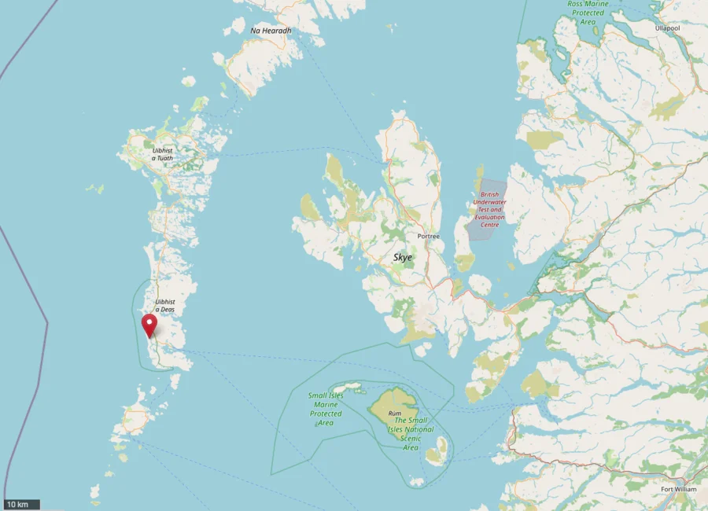
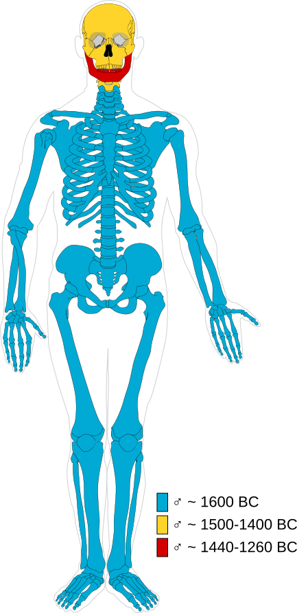
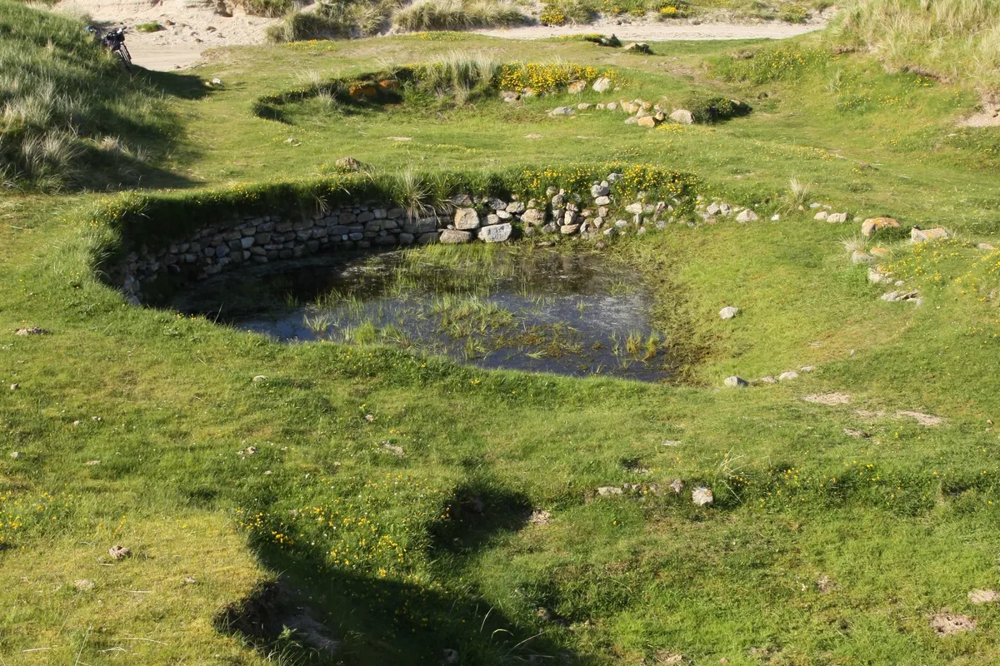

Picture the Western Isles on a winter morning. The Atlantic wind coming in off the water, low cloud sitting on the machair, the kind of cold that doesn't bite so much as simply claim you. South Uist — one of the long string of islands that hangs off Scotland's left shoulder like a fraying thread — is a place where the land feels ancient in a way that goes beyond history and into something more elemental. The grass looks like it has always been there. The peat bogs, dark and still and patient, look like they have been waiting for something for a very long time.
They have been.
And in 1989, a team of archaeologists began to find out exactly what.

The Village That Should Not Exist
The site is called Cladh Hallan. It sits near the southern tip of South Uist, unremarkable from the outside — a gentle rise in the machair, a scattering of stones half-swallowed by centuries of grass and wind-blown sand. But beneath that quiet surface lay something that would eventually rewrite what we thought we knew about the people of Bronze Age Britain.
Archaeologists from the University of Sheffield, led by Professor Mike Parker Pearson, excavated Cladh Hallan between 1989 and 2003. What they found was a Bronze Age village of extraordinary longevity — a settlement that had been occupied, in one form or another, for roughly fifteen hundred years. From around 2000 BC to 500 BC, people lived here, raised families here, buried their dead here.
That last part turned out to be considerably more complicated than anyone expected.
Beneath the floors of three late Bronze Age roundhouses — circular, sunken-floored structures built around the 10th century BC — the team uncovered something that had never been found anywhere else in Britain: mummified human remains. Not the incidental preservation you sometimes get in waterlogged or frozen ground, but deliberate, intentional mummification. Someone had done this on purpose.
The discovery alone would have been remarkable. What the DNA revealed was something else entirely.
The Science That Changed Everything
The two most significant finds were the remains of a man and a woman, each buried in a tight foetal position beneath the house floor. Their postures suggest care — someone had arranged them deliberately, tucked them in, placed them with attention. They were not discarded. They were installed.
Initial dating suggested the man had died somewhere around 1300–1600 BC. The woman, somewhat later. But here is where things began to unravel.
When researchers subjected the bones to more sophisticated isotopic analysis — measuring the chemical signatures locked inside the skeletal material — the dates did not add up. Different bones within the same body were returning different dates. Wildly different dates. The kind of dates that should not, by any logic, belong to the same person.
Then came the ancient DNA analysis. Mitochondrial DNA — the genetic material inherited through the maternal line — was extracted from multiple bones within each skeleton. And the results stopped the room cold.
The man was not one man.
He was three.
His head and neck belonged to one man. His jaw came from another. The rest of his body — torso and limbs — came from a third. These individuals had died at different times, separated by centuries. Someone, at some point in the Bronze Age, had carefully assembled this person from the components of other people, and then mummified the result.
The woman was also composite. Ancient DNA analysis showed that her mandible, right humerus and right femur each came from different individuals. The skull could not be conclusively assigned. Three confirmed — and possibly more.
And then both of these assembled, composite human beings were preserved — kept for what the evidence suggests was a very long time, with some of the body parts coming from people who had died centuries before the final burial — and then laid beneath the floor of a house that living people moved into and occupied as their home.

The male: Head & neck from one man — jaw from a second — torso & limbs from a third. At least three individuals, assembled into one body.
The female: Mandible, right humerus, and right femur each confirmed from different individuals. The skull could not be conclusively assigned. Three confirmed — possibly more.
The time gap: Some of the body parts came from people who had died centuries before the final burial beneath the roundhouse floor.
How You Make a Mummy in a Scottish Peat Bog
Before we get to the why — and we will get to the why, though the answer may frustrate you — it is worth understanding what the people of Cladh Hallan actually did, because the technical precision of it is astonishing.
Peat bogs are extraordinary preservers of organic material. The acidic, anaerobic environment — low oxygen, high acidity, cold — creates conditions that prevent the normal processes of decay. The acid in the water acts like a tanning agent on soft tissue, turning skin to leather, preserving it against time in a way that ordinary burial in soil never could. The bog mummies of northern Europe — Tollund Man in Denmark, Lindow Man in Cheshire, the bodies found in Irish bogs — are the most famous examples of this accidental preservation.
But the people of Cladh Hallan were not relying on accident.
Analysis of the outer layer of bone from the Cladh Hallan mummies showed a very specific pattern of demineralisation — a chemical signature that researchers have suggested is consistent with temporary immersion in acidic peat water, perhaps for a matter of months. Long enough for soft tissue to be preserved. Not so long that the acid destroyed the bone itself.
This is not the behaviour of people stumbling across a preservation technique by chance. This is knowledge. This is practice. This is craft.
And then — and this is the detail that truly catches in the throat — they kept the bodies. For a very long time. The gap between when some of the component individuals died and when the assembled mummies were finally buried can be measured not in years but in centuries.
These composite beings were part of the community long before they went into the ground. They were present. They were there.
The House as Sacred Space
To understand why anyone would do this, you need to let go of the way you currently think about the relationship between the living and the dead.
In the modern Western world, we make a clean separation. The dead go to designated places — cemeteries, crematoria, memorial sites — and the living occupy a different kind of space entirely. We do not generally bury our grandparents under the kitchen floor and then make breakfast above them every morning. The idea is, to our sensibility, somewhere between eccentric and horrifying.
But to the people of Bronze Age South Uist, the roundhouse floor was exactly the right place for an ancestor to be. Across Bronze Age Britain, there is growing evidence that the home was understood as a cosmological space as much as a practical one. The interior of the roundhouse — its hearth, its orientation, its physical relationship to the movement of the sun — encoded meaning that we are only beginning to decode. The dead, placed beneath the floor, were not out of sight and out of mind. They were the foundation. Literally. The house was built on them, rooted in them, made legitimate by them.
When you walked across that floor, you walked over your ancestors. When the fire burned in the hearth, it burned above them. The living and the dead shared the same space, the same warmth, the same roof. This was not macabre. This was continuity.
So Why Did They Build People Out of Other People?
And now we arrive at the question that has occupied archaeologists, geneticists, and anthropologists for the better part of three decades, and which still does not have a definitive answer.
Why composite bodies? Why assemble a person from the parts of multiple different individuals, some of whom were separated by centuries?
Several theories have emerged, and each of them is compelling in its own way.
The first, and perhaps the most politically minded, concerns lineage and land. In the Bronze Age, as in many pre-modern societies, rights to territory were often rooted in ancestry. You could claim the land because your people had always been of the land. Your ancestors were proof of your belonging. A composite mummy — a body that physically incorporated the bones of multiple bloodlines — could serve as a kind of biological title deed. By merging the remains of different family groups into one body and installing it beneath the house floor, you were making a claim that was literally embodied. This house stands on all of these people. This land belongs to all of these lineages. We are all of them, and all of them are us.
The second theory is more intimate and perhaps more moving. Around 1200–1000 BC — exactly the period when Cladh Hallan's composite mummies were being assembled and buried — Bronze Age Britain was undergoing significant social upheaval. Old networks were breaking down. Communities were reorganising. Groups that had been separate were coming together, merging, negotiating new identities. The composite mummy, on this reading, is a peace offering made flesh. It is a physical argument for unity — a statement that these people and those people are now, literally, one people.
The third theory is the one that sits quietest and cuts deepest. Perhaps the merging was a form of love, or at least of grief. Perhaps someone, somewhere in the Bronze Age, refused to let go — not of one person, but of several. Perhaps they gathered what they could of those they had lost, across years or decades, and assembled from the fragments something that felt, in some deep spiritual sense, whole. A being made of beloveds. A composite of everyone who mattered.
We do not know. We may never know. The people of Cladh Hallan left no writing, no explanation, no accompanying note. They left only bones and intention, and three thousand years of silence.
Closer to Home Than You Think
South Uist lies roughly 120 miles west of Invergordon as the crow flies — but distance is the wrong measure. These Atlantic-facing landscapes were part of a wider Bronze Age world connected by sea routes, shared technologies, and overlapping ideas about land, ancestry and the dead. The people who built those composite mummies at Cladh Hallan were part of a world that extended across the northern seaboard of Scotland, a world that included the land you are standing on when you step off a ship at Invergordon.
The Scottish Highlands are not just scenery. They are a deep archive — layers of human occupation and human meaning pressed into the peat and the stone, going back further than most people realise. The Bronze Age is not a chapter in a textbook. It is in the ground beneath the fields you drive past on the way to Loch Ness. It is in the chambered cairns on the hillsides above the Cromarty Firth. It is in the standing stones that still punctuate the machair of the Western Isles, placed by hands that understood something about the relationship between the living and the dead that we are still, millennia later, trying to reconstruct.
When you come ashore at Invergordon and look out across the Firth, you are looking at a landscape that has been inhabited, and argued over, and mourned over, and celebrated, for a very, very long time. The Frankenstein mummies of South Uist are just one chapter. There are hundreds more.
What Remains
The site of Cladh Hallan is still there. You can visit it — a low mound in the machair of South Uist, marked now with an information board, the surrounding landscape largely unchanged from what it would have looked like in the Bronze Age. The Atlantic is still there. The wind is still there. The peat bogs are still there, dark and patient and full of slow chemistry.

The mummies themselves — or what remains of them after analysis — are held in academic collections, studied and restudied as technology advances. In 2021 and 2025, UCL Press and Oxbow Books published the definitive two-volume academic study of the site, bringing together decades of excavation data, DNA results, isotopic analyses, and archaeological interpretation into the most complete picture yet of what happened here.
But completeness is not the same as understanding.
What we know is this: three thousand years ago, on a windswept island off the west coast of Scotland, people carefully assembled human beings from the bones of other human beings who had died centuries apart, preserved them in peat bogs with extraordinary precision, carried them through their community for what may have been generations, and finally laid them — with evident care and ceremony — beneath the floors of homes that the living then moved into and inhabited.
They did this deliberately. They did this with skill. They did this, clearly, because it meant something profound to them.
We just don't know what.
And maybe that is the most remarkable thing of all — not the strangeness of what they did, but the humility it demands of us. The people of Cladh Hallan were not primitive. They were not simple. They were fully human, fully complex, fully capable of systems of meaning and ritual and belief that we cannot reconstruct from the outside. Their relationship with death, with identity, with the boundaries of the self — where one person ends and another begins — was rich and intricate and entirely their own.
We are the ones standing outside it, pressing our faces to a window into the deep past, seeing only the shapes of things we cannot quite name.
The peat bogs of South Uist kept their secret for three thousand years. They gave it up reluctantly, and only in fragments. The full story, if there ever was a single story, may be gone for good.
But somewhere on that machair, in the dark and the acid and the cold, the bones still hold the chemistry of lives we cannot imagine. And that, in itself, feels like something worth sitting with for a while.
Invergordon is your gateway to one of the world's most history-rich landscapes. See the full 2026 cruise schedule — ship names, arrival times, and what to do with your day ashore.
View the 2026 Cruise Schedule →National Geographic — "Frankenstein" Bog Mummies Discovered in Scotland ↗
The Past — Cladh Hallan: Examining life and death in the Bronze Age ↗
UCL — Cladh Hallan: Roundhouses and the Dead (full site publication, 2025) ↗
Research led by Professor Mike Parker Pearson, University of Sheffield / UCL.